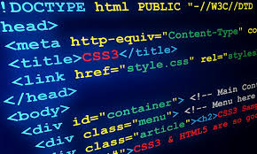

The Code Magazin
The Basic Language of the Web: HTML
.jpg)
Posted by Laura Jonas on Monday, Junn 21st 2027
All modern websites and web applications are built using three fundamental technologics: HTML, CSS and JavaScript. These are the languages of the web.
In this post, let's focus on HTML. We will learn what HTML is all about, and why you too should learn it.
What is HTML?
HTML stands for Hyper Text Markup Language. It's a markup language that web developers use to structure and describe the content of a webpage (not a programming language).
HTMl consists of elements that describe different types b content: paragraphs, links, headings, images, video, etc. Web browsers understand HTML and render HTML code as websites.
In HTML, each clement is made up of 3 parts:
- The opening tag
- The closing tag
- The actual element
Why should you learn HTML?
There are countless reasons for learning the fundamental language of the web. Here are 5 of them:
- To be able to use the fundamental web dev language
- To hand-craft beautiful websites instead of relying on tools like Worpress or Wix
- To build web applications . To impress friends
- To have fun